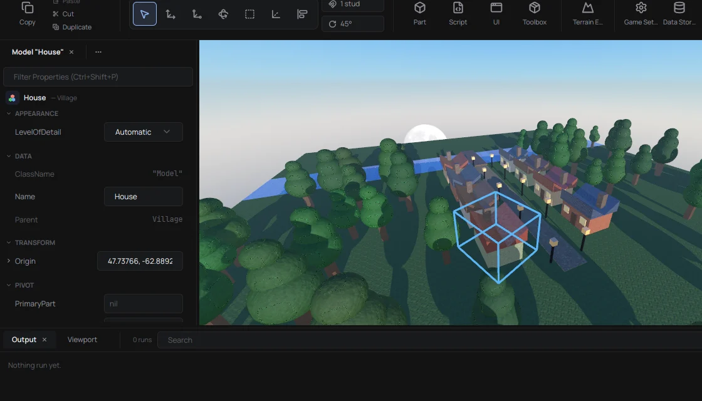

The editor
Feels like Studio. That's the whole point.
Explorer, Properties, the ribbon, gizmos, docks you can move around. Real places open and save back in the real formats, binary and XML.
Every PR gets checked against real Studio before it lands. If something behaves differently, that's a bug.
